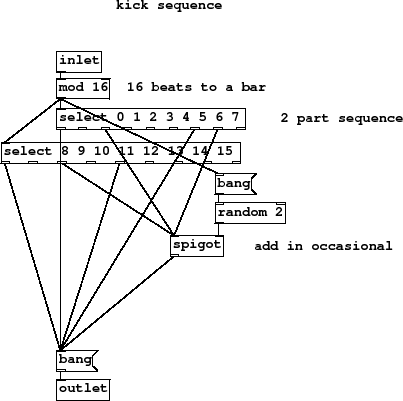
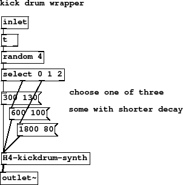
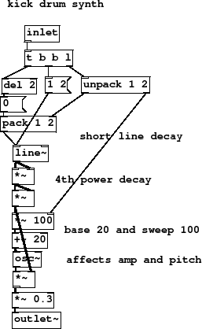
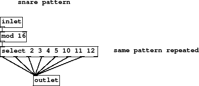
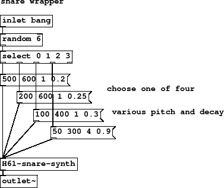
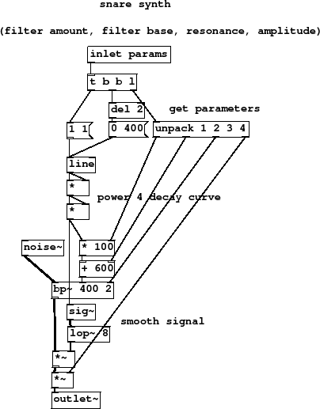
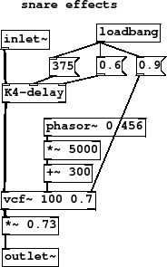

Subsections
Figure 14 summary
- separate kick and snare synths
- separate kick and snare sequencers
- panning and volume stuff
As usual there is a mixer channel at the bottom of this wrapper. There are
two instruments in here, a kick and snare drum, one panned to the left
and one to the right. The channel is controlled by fader 2 and pan 2.
Five abstractions make up the patch, a sequencer for the kick drum pattern
and a kick drum synth, and the same for the snare drum plus an effects
patch.
H1-drums.pd
Figure 15 summary
- 16 beats to a bar
- 2 part sequence
- add in occasional
When placing beats you don't have to use one [select] object
and insert each beat in the right order, that would be most
frustrating, instead its okay to just add more [select]
operations for new beats as needed. Here the first and
second bar are handled by different [select] units.
Beats 2, 7 and 10 do not play every time.
A [spigot] is like a valve, it lets its input through to the output
whenever a 1 message appears at its right inlet, and continues to do so
until it is sent a 0 message. The messages on the left inlet are then
blocked and do not appear at the output. Here a [random 2] unit
in combination with a spigot permits one in every two beats to pass through.
Figure 15:
H2-kickseq
|

|
H2-kickseq.pd
Figure 16 summary
- choose one of three
- some with shorter decay
This wrapper modifies the performance of the kick drum synth
by storing three preset sounds, long and low, medium, shorter and higher.
On each received beat one is selected at random, including a rest where
no kick plays at all. Note how this behaviour is built in to the
instrument now, not the sequence as we have defined it.
Combined with a measure of uncertainty for individual beats in the previous
patch the result is a much sparser pattern than you might expect.
Figure 16:
H3-kickdrum
|

|
H3-kickdrum.pd
Figure 17 summary
- short line decay
- 4th power decay
- base 20 and sweep 100
- affects amp and pitch
Two parameters are passed for each kick sound, a decay time
and a pitch range. This list is unpacked first from the
list output of [t b b l] with the first decay value going
to the inlet of a [pack] object and the second going
to the set the frequency sweep scale.
A more complicated arrangement of messages for this
envelope shows the simplicity, and limitation, of [line~]. In order
to have a non-zero attack we need to hold off the decay message
for at least as long as the attack rise. This is done with a message
delay [del 2] giving a 2ms delay to the bang message.
The signal is an sine wave with amplitude and frequency as
functions of the fourth power of the falling line segment. Frequency
is down to a minimum of 20Hz, and as high as the second parameter passed.
Amplitude is always from full to zero, decaying in the time set by the first
parameter.
Figure 17:
H4-kickdrum-synth
|

|
H4-kickdrum-synth.pd
Figure 18 summary
Couldn't be much simpler this one, it plays beats 2, 3, 4, 5, 10, 11 and 12.
Figure 18:
H5-snareseq
|

|
H5-snareseq.pd
Figure 19 summary
- choose one of four
- various pitch and decay
Each of four parameters is unpacked and connected to
its destination in the DSP. The first parameter
sets the top of the sweep range and the second
sets the minimum with [* ] and [+ ]
units respectively. Parameter 3 goes directly
to the resonance inlet of filter [bp~ 400 2 ].
The signal source is
[noise~ ], which is modified by the filter. Notice that
the control signals for the filter cutoff are not at audio rate.
Message domain control is used because [bp~ ] cutoff is a message rate inlet.
However, we convert the amplitude control to a smoothed signal at the last moment,
[lop~] is used to remove any sudden jumps.
Figure 19:
H6-snaredrum
|

|
H6-snaredrum.pd
Figure 20 summary
- get parameters
- power 4 decay curve
- smooth signal
In an identical fashion to the kick drums, some
snare drum random variation. There is a 1/3 chance that no
beat will play. On the remaining 2/3 of beats one of 4 possible
parameter messages is sent. The values represent filter amount,
filter base, filter resonance and total amplitude. As you
can see there is a mixture of short, long, high and low values
in the four messages.
Figure 20:
H61-snare-synth
|

|
H61-snare-synth.pd
Figure 21 summary
These effects are a slowly moving filter on top of a delay
unit (which we will examine in the next section). A [loadbang]
sets up an initial delay time, fixed to 375ms here, and
feedback (60 percent), as well as setting the initial resonance
of [vcf~] which prefers to be set up this way.
An lfo can simply be a normal oscillator running very slow when
you want audio rate control signals. The cutoff frequency of
[vcf~] is set by an audio signal which gives a much
smoother change of settings. If a control rate filter
adjustment is used here at such a low frequency we would certainly hear
occasional clicks with a [bp~ ] unit. The lfo sweeps up
in one direction between 300Hz and 5300Hz about every 2 seconds.
Figure 21:
H7-snare-fx
|

|
H7-snare-fx.pd
Figure 22 summary
This kind of sound is typical of electronic
music circa 1979/80, like Kraftwerk (Autobahn), Ultravox (Vienna) or early
Human League (Being Boiled). Resonant noise sweeps in the lower ranges
have quite a powerful sound.
It's hard to pin down this beat.
With just enough randomness the actual beat is unclear on first
listening to the drums alone, it seems to mutate around a bunch
of similar patterns. This effect is helped lots by the delay. It
doesn't really make sense until we also have a bassline to
anchor key points with, so let's build a bass line in the
next section.
H8-drums-play.pd
H8-drums-play.ogg
Andy Farnell
http://obiwannabe.co.uk/